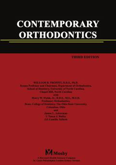

COOrtodontiya fanining nazariyasi va amaliyotiga bag'ishlangan fundamental tibbiy qo'llanma.
Ushbu kitob ortodontiya fanining asosiy nazariyasi va amaliyotini qamrab olgan bo'lib, tish va jag' anomalyalarini tashxislash hamda davolash usullarini yoritadi. Mualliflar tish-jaw tizimi rivojlanishi, diagnostika va davolash rejalashtirish bo'yicha keng qamrovli ma'lumotlarni taqdim etgan. Asar talabalar va amaliyotchi shifokorlar uchun asosiy qo'llanma hisoblanadi.